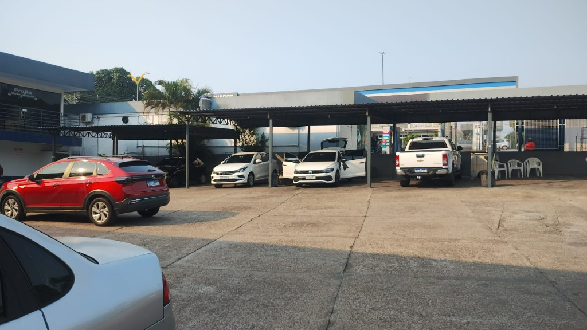

Sistema Web de Gestão Operacional e Controle Financeiro
Transformação Digital e Transparência na Microempresa Lava Jato do Valmir
O Diagnóstico Real: Pátio Analógico In Loco
1. O Pátio Físico Operacional
Boxes de lavagem sob cobertura e alta rotatividade de veículos avulsos e frotas conveniadas no pátio.
2. A Prancheta dos Lavadores
Remuneração diária dos 7 lavadores (Sérgio, Elias, Matheus, Romário, Narciso, Nildo e Oscar) dependia de somas manuais (`2,00 + 2,00 + 10,00`) com alto risco de rasuras e atritos.
3. Mesa com Calculadora e Fichas
Tiras de papel cortadas na régua preenchidas à mão (PLACA/COR/VALOR) e apuradas na calculadora Casio no fim do dia.

Estrutura operacional do Lava Jato do Valmir com veículos aguardando atendimento nos boxes cobertos.
As Dores da Operação Analógica
Vulnerabilidade dos Trabalhadores
Anotações em celular próprio e folhas rasuradas geravam divergências no valor diário das comissões. Desgaste na relação entre administração e equipe.
Prejuízos com Frotas Faturadas
Convênios corporativos estipulam no máximo 1 lavagem/semana por carro. Sem validação instantânea, ocorriam lavagens duplicadas com recusa de faturamento.
Lentidão e Fila na Recepção
Atendimento levava de 3 a 5 minutos por cliente procurando fichas físicas em pastas suspensas e gritando instruções para o pátio.
A Solução e a Stack Tecnológica
Python 3.11+ / Django
Padrão MVT com regras de negócio encapsuladas no ORM e segurança robusta nativa.
Banco Híbrido
SQLite3 para desenvolvimento local e PostgreSQL configurável por variáveis de ambiente para implantação.
Tailwind CSS (CDN)
Abordagem Mobile-First no pátio para toque fácil e interface desktop densa na guarita.
Gunicorn & WhiteNoise
Servidor WSGI e serviço de arquivos estáticos para uma configuração simples de implantação.
Regras de Negócio no Núcleo do Domínio
RN01: Trava Semanal de Frotas Conveniadas
Crítica
Veículos faturados possuem limite de 1 lavagem por semana. A recepção consulta a regra antes de criar a OS; o modelo também disponibiliza a validação clean().
RF03: Comissão Dinâmica por Lavador
Transparência
Propriedade calculada valor_comissao baseada no percentual individual cadastrado para cada lavador (Comissão = Valor_OS × % / 100). Extrato exato sem cálculos manuais.
RN02: Flexibilidade Temporal de Pagamento
AtendimentoCliente avulso pode pagar no atendimento ou deixar o valor pendente para registro posterior. Cliente faturado não paga na lavagem: o valor fica pendente para a empresa vinculada. A entrega não depende do pagamento.
RN03 / RNF05: Controle de Acesso RBAC
SegurançaAs telas de gerenciamento e impressão exigem perfil administrativo. Recepção e Pátio exigem login; não há separação por grupos nesses módulos.
Módulos Operacionais Especializados
- • Busca de veículo por placa e exibição dos dados cadastrados.
- • Cadastro de cliente e veículo durante o atendimento.
- • Alerta visual imediato caso frota conveniada atinja o limite.
- • Registro financeiro associado à OS, conforme tipo de cliente.
- • Interface adaptada para smartphones e tablets no pátio.
- • Interface responsiva com controles para atualizar o status.
- • Etapas: Fila → Lavagem → Secagem → Concluído → Entregue.
- • Registro da data e hora ao marcar a entrega.
- • Fechamento diário de caixa consolidado com lucro líquido.
- • Extrato individual de comissões por lavador.
- • Relatório de clientes faturados com seletor de período.
- • Relatórios HTML imprimíveis pelo navegador; sem geração de PDF no servidor.
Engenharia e Testes Automatizados
A suíte de testes do Django cobre cenários selecionados da aplicação; a contagem exibida deve corresponder à execução atual:
Extensão Universitária e ODS da ONU
ODS 8: Trabalho Decente
Crescimento Econômico SustentávelAo garantir que cada lavador receba com exatidão matemática o valor das suas lavagens do dia, sem rasuras e sem descontos indevidos, promove-se transparência e dignidade ao trabalho comissionado.
ODS 9: Inovação e Infraestrutura
Indústria e ModernizaçãoDemocratização do acesso a ferramentas computacionais modernas para microempresas periféricas de Manaus, viabilizando sustentabilidade financeira e retenção de valor no negócio local.
Ganhos e Resultados Mensurados
Obrigado pela Atenção!
A tecnologia como instrumento prático de cidadania, dignidade no trabalho e transformação regional.
projeto_posto_de_lavagem_ciesa